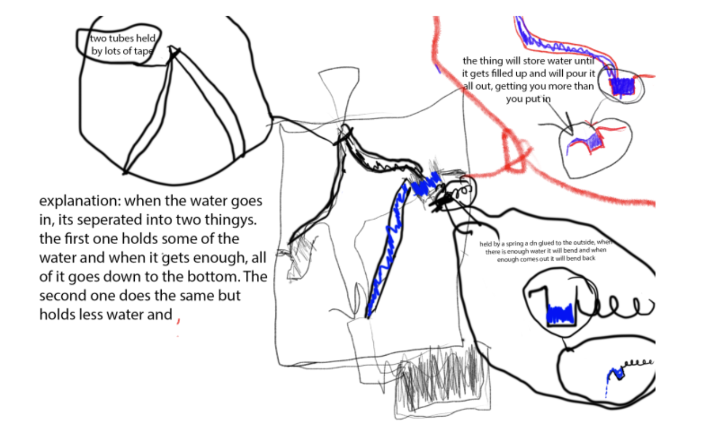
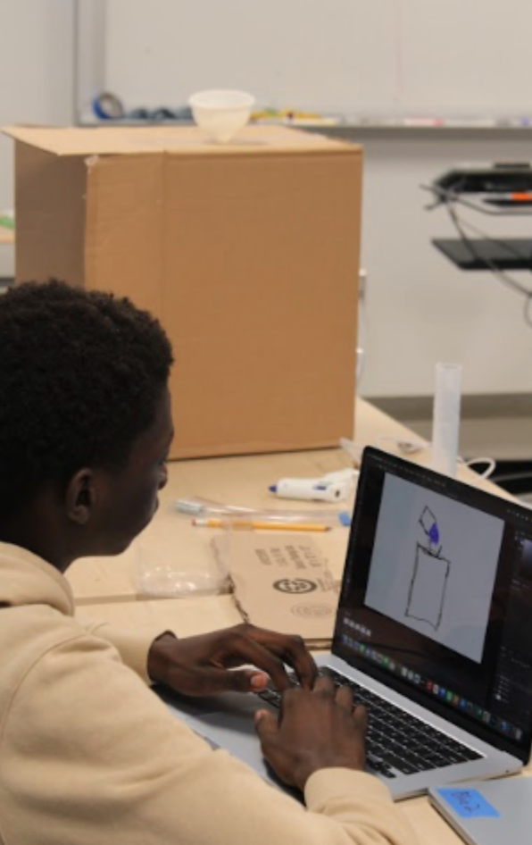
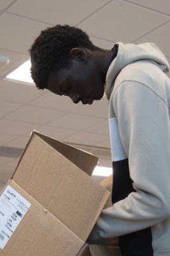
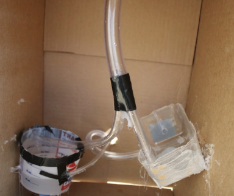
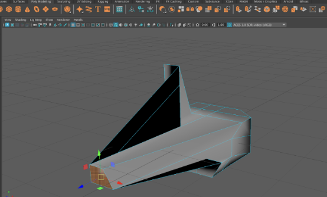
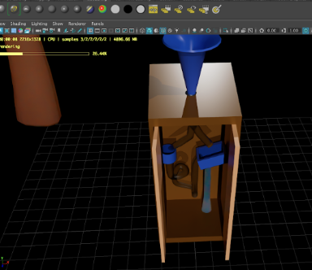
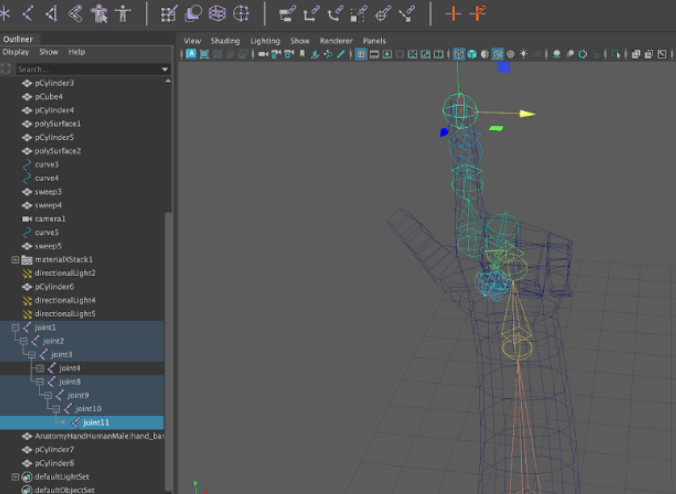

In my 9th grade New Media and Technology class, we were assigned into groups with names corresponding to different colors. I was in the blue group. We were presented with a black box with a funnel on the top. Our goal was to run experiments and collect data by pouring water in the box and seeing what came out, then collectively coming to a conclusion on what we thought was inside.
Our team started collecting data and based our design on what we saw. We decided to pour in different amounts of water over a set number of trials and record how much came out. This is some of the data we collected:
| Trial | Water Input | Water Output | Water "stored" | Notes |
| 25 | 1000mL | 300mL | 700mL | A lot of water spilled while pouring in |

We used Adobe Photoshop to create these sketches while learning skills such as frame animation, editing tools, and brushwork.

After choosing our design, when then made a materials list and started building our project. Materials:
As our team began to build, we learned some photography skills, such as the rule of thirds, framing, and angle. We then applied these skills whilst building our project:

Eventually, we made some slight changes and proceeded to finish our build:

Our final step towards completing our physical model was to test it and compare the data to the original Black Box. Here is what we found:
Our Black Box DataAs you can see from the data, our build was flawed because too much water leaked out at once for it to be collected. One of my teammates, Yousif, made a slight change in our design, moving one of the tube locations so water could flow out of it more easily. Unfortunately, most of the water still leaked out, but we did manage to collect some.
Finally, our last task was to create a 3D animation in Autodesk Maya, while simultaneously learning skills such as lighting, rigging, camera animation, special effects, rendering, etc, to implement them into our final render. We first learned poly modeling and how to use simple tools to create complex shapes.

Then, we learned to add materials and lighting to our scenes to make more realistic renderings. For my build, I put two doors and had them both set to have a cardboard-like look and material to match my build, along with making my funnel and containers a blue plastic material, as it roughly resembles what our original creation materials were.

Furthermore, we learned rigging and animating objects to add immersion to our animations. We learned how to add joints to a hand model so it could be freely manipulated.

Then we use keyframes to help us animate our Black Box scene, and even move the hand model we made to have it make gestures/hand signals. Some students even got to add special effects such as realistic water.
The 21st-century competence skill I developed the most was problem solving and critical thinking, specifically, my ability to make insightful judgments and decisions. Nearing the end of my project, I was running behind on a few things and knew I couldn't finish everything by the deadline. I had to decide on what parts of the project needed the most attention so it could look presentable. This, along with many other challenges I encountered whilst modeling, helped me grow significantly in that area.